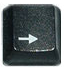
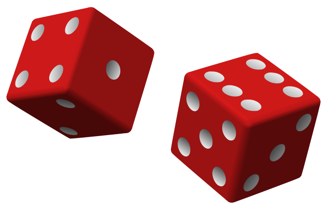
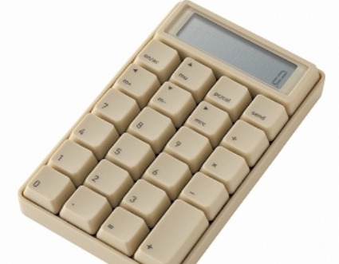
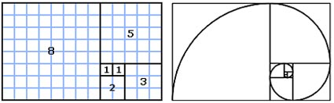
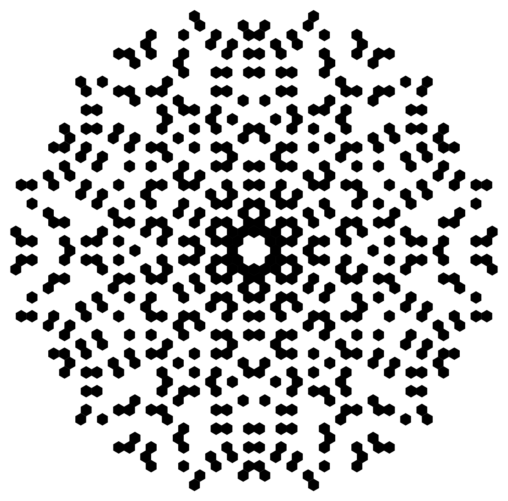
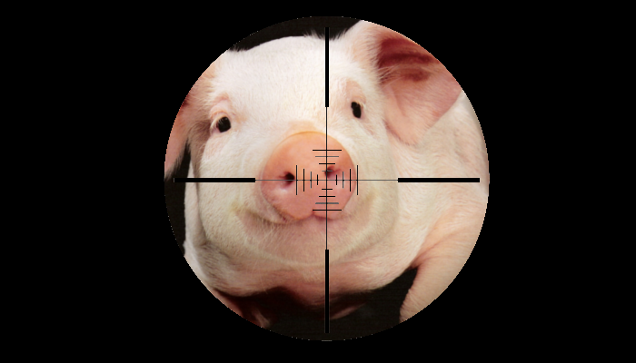

Hallo! Om de presentatie te starten klik hier en druk op rechts: 
Roll the Dice
Zie klasse 3
Levens echte dobbelstenen, nu met een anno 1980 animatie!

Calculator
Zie klasse 4
Bereken tafels, machten, breuken EN kwadratenreeksen met deze super handige reken-pagina!

Reeks van Fibonacci
Zie klasse 5
Mocht je het ooit nodig hebben, dan kan je het hier berekenen!
Het gaat zo van: 0, 1, 1, 2, 3, 5, 8, 13, 21, 34, 55, 89, 144, 233, 377, 610, 987, 1597, 2584, 4181, 6765, 10946, 17711, 28657, 46368, 75025, 121393 ENZOVOORT!

Ontbinden in Priemfactoren
Zie klasse 6
Tja, hier kan je je getallen ontbinden in priemfactoren, ik zou het maar proberen als ik jou was want ik heb er hard aan gewerkt!

SHOOT THE PIG
Zie klasse 7
Er is niets spannender dan deze Third Person Shooter! Nu met echte GeForce PhysX!

Het einde
Bedankt voor het volgen van de presentatie
Geen echte GeForce PhysX, maar wel realistische berekeningen!
Deze website is gemaakt voor de ICT Academie ROC Leiden.
De website is het resultaat van het project MathMate M2.
Dit is het vierde project van het eerste leerjaar en is bedoeld om te leren hoe het is om voor een werkgever te werken.
Website door Wim Brand uit klas Applicatie Ontwikkeling B.
Design door Elmas Bayrak uit de Media Developer klas.